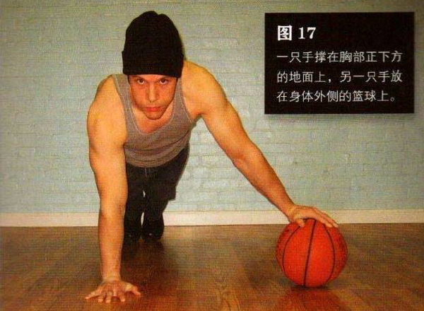
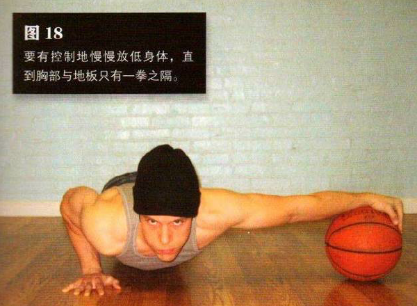

摆出做俯卧撑的姿势，身体成一条直线，一只手撑在胸部正下方的地面上，另一只手放在身体外侧的篮球上，靠双脚和撑在地上的那只手支撑身体。双臂伸直，放在球上的手要尽量向远处伸。这是该动作的起始姿势。
要有控制地慢慢放低身体，直到胸部与地面只有一拳之隔。如果你是独自锻炼，可以像做标准俯卧撑那样，借助棒球或网球控制动作幅度。放低身体时手会顺势把篮球推到远离身体的位置。身体降至最低点时，暂停一下，然后将自己推回到起始姿势。
由于杠杆原理，撑在篮球上的那只手臂如果完全伸直的话就很难用力。你可以让这只手臂的肘部稍稍弯曲，从而让篮球离你的身体近一点儿，这样做杠杆俯卧撑会容易一些。不过不要太过，要是你把篮球放在身体正下方，那这个动作就变成了第七式—偏重俯卧撑。随着你越来越强壮，你可以逐渐让球远离身体，直到可以将手臂伸直做标准的杠杆俯卧撑。
初级标准：1 组，5 次
中级标准：2 组，各 10 次
高级标准：3 组，各 20 次